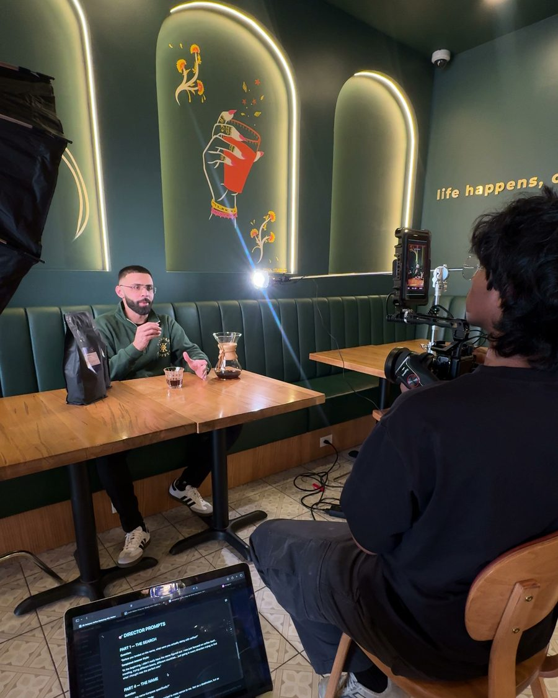
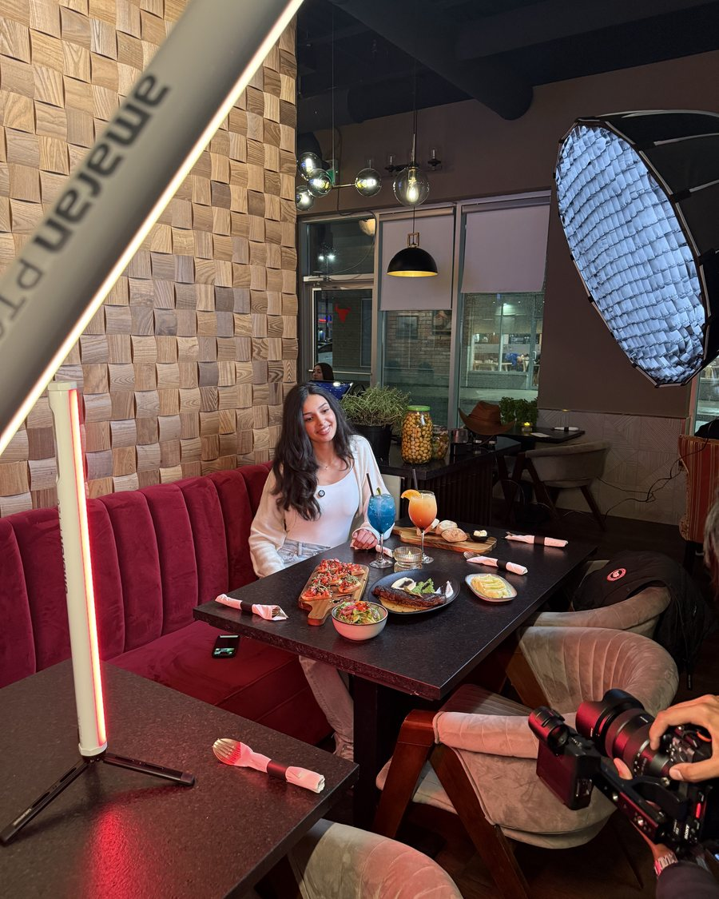

What is a creative director in social media?
Everybody wants to be a creative director right now. It’s in half the bios I scroll past, usually right under a camera emoji. The title sounds like a promotion from videographer. It’s a different job.
On most content teams you’ll find three people. The videographer makes the shot look good. The marketing manager reports whether it hit the numbers. The creative director decides what the brand is saying, and on social that means owning the hook, the shot list and the numbers too. An idea nobody watched past second three was a bad idea, however good it looked in the deck.
The definitions back this up. Adobe’s guide describes videographers as typically a one-person team or a small crew whose job is to capture footage, and it quotes the cinematographer and videographer Josh Miller: “Directing is actually one of the biggest things as a videographer that you need to learn.” A creative director, by the standard definition, is the person who makes high-level creative decisions and directs the creative people who produce the end result.
| Videographer | Marketing manager | Creative director | |
|---|---|---|---|
| Owns | the shot | the numbers | the idea, and whether it performs |
| Asks | how do I make this look good? | did it perform? | what are we saying, to whom, and will they stay past second three? |
| When it goes wrong | the footage came back thin | the post missed its target | the idea was thin and everybody built it anyway |
| Finished when | it is cut and it looks good | the report is in | somebody else could make it to the same standard without me |
You can hire incredibly talented people and still put out content that feels like five different brands. Everybody did their job. Nobody gave them a clear direction.
What does the job actually involve?
Say we’re launching a new café. Before anyone films, I need to know who we’re selling to, what makes this place different from the one across the street, and what somebody needs to see in the first three seconds to want to walk in. That last answer decides the whole shoot. If it’s the pour, the video gets built around the pour and the latte art gets two seconds at the end.
Then I translate that into a direction my team can actually work with. My videographer needs to understand what we’re capturing. My editor needs the pace and the story. My strategist needs to know what we’re trying to pull off and how we’ll know if it worked. Shooting is a small and late part of my week.
The arc comes first. Before a single line is written, I map the shape: what the first beat makes you need, what the second one answers, where the turn sits. If the arc doesn’t hold on its own, no script is going to save it.
Then the card. Every video leaves my hands as one document with the voiceover, the camera direction, and under every line of dialogue, in capitals, how it’s meant to be played. [NERVOUS.] [FLAT, LIKE IT’S OBVIOUS.] That bracket is the smallest thing on the page, and it decides more takes than the writing does.
Then the notes. “Cut the first two seconds” fixes one video. “Cut the first two seconds, the hook starts when he moves” gives my editor a rule they’ll use for a year. Learning to write the second kind is most of what separates directing from fixing.

What does it take to become one?
Taste you can explain. Liking a cut is easy. Saying why it works, in a sentence an editor can act on next week, is the actual skill. If you can’t explain a decision, your team can only copy it, and copying falls apart the moment the brief changes.
Reading numbers the way you read a frame. Retention, saves and shares are creative feedback. A drop at second two is a note about the hook. A post people save is telling you what they want more of. Hand the numbers to someone else and you’ve handed them half your job.
Getting your ego out of it. I want people who are better than me at what I hire them to do. When they bring me something better than I pictured, my job is to recognize it and give it room, and still make the call on whether it serves the idea.
Letting go of the camera. For my first stretch I kept re-cutting things myself. It was faster, it looked better, and it taught nobody anything. If I’m the best editor in the room, the work can never be better than me on a Tuesday. Handing a cut back with three sentences on it is slower on the day and pays off for a year.

Does a creative director have it all figured out?
No, and I’d be worried about anyone who says they do. Social media moves faster than any brief. What worked on Instagram in the spring is dead by the fall, and the format everyone copied last month is the one people scroll past now.
So I test constantly. I’ll put out two versions of the same idea with one thing changed and let the audience pick. Once it’s live I’m in the analytics: where people dropped off, what they saved, what they sent to a friend. That decides what we shoot next week. The reel that promoted this post went out in more than one version for exactly that reason.
Questions people actually ask
Can a videographer become a creative director?
Yes, and it’s one of the most common ways in. If you already shoot your own ideas, you’re doing both jobs and getting paid for one. Start writing the brief before you film, even when you’re the only one who’ll read it.
Is a creative director the same as a marketing manager?
No. A marketing manager is measured on results and budget. A creative director is measured on whether the work says the right thing, in the brand’s voice, to enough people. On a good team they argue often and need each other.
What position is higher than creative director?
In an agency, usually an executive creative director or a chief creative officer. If you work for yourself the ladder doesn’t apply, and the only promotion is a wider brief: more of the decision, earlier.
If you’re a videographer who wants to make this jump, that’s what my mentorship is for. Book a 15 minute call and bring the work you’re making right now.
The day I stopped opening the project file was the day the work started getting better without me in it.
AI disclosure. Structure and a first draft were produced with Claude from my own working practice, my voice guide and a reel script I wrote, then edited, fact-checked and approved by me. Both external sources were opened and checked by me. How I use AI.